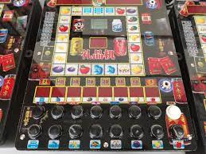
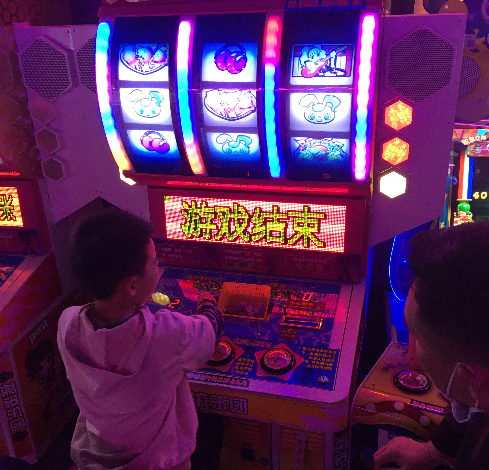
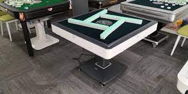

主要产品

参赌：赌博机赔率可操控;起底新型赌博机黑产：体积缩小躲避监管，内置程序可操控赔率

参赌：赌博机赔率可操控;起底新型赌博机黑产：体积缩小躲避监管，内置程序可操控赔率赌博机是具有赌博功能的游戏机机型、机种；赌博机是一种游戏厅的附属品，最初发展的时候大多具有娱乐性；发展到20世纪后期赌博机出现了社会危害。在中国大陆和港台地区，赌博机是违法的物品。人们经常见到的赌博机有老虎机，水果机等。

麻将机最早由日本率先发明、生产，上个世纪九十年代初由日本少量原装进口到中国，因为中国市场庞大，麻将机行业进入快速发展期并形成庞大的产业链。麻将机由最初传入中国的30号小牌逐渐成功的改革成38、40、46甚至52号的大牌。麻将机行业兴起之时单口机占据主流，主要由雀友生产，后来四口机占据主流。